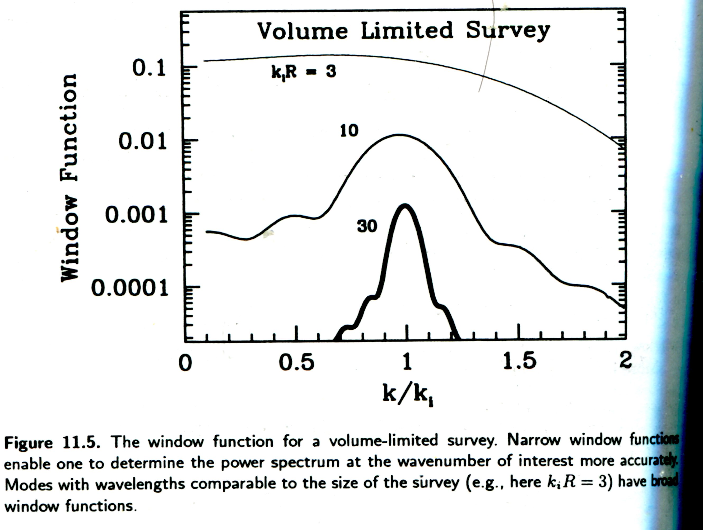
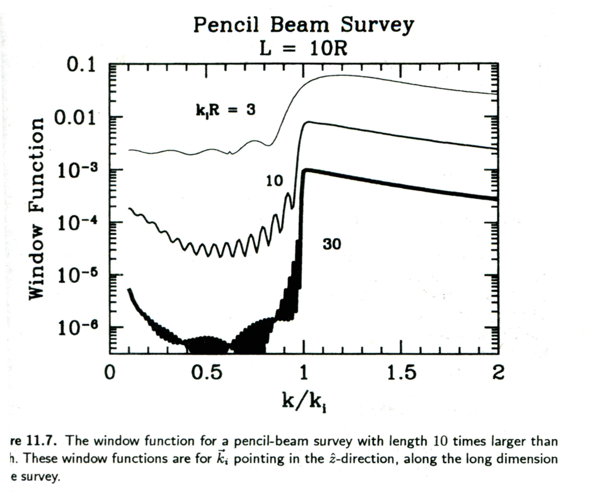

宇宙学中的统计方法【丙】
宇宙学中的统计方法笔记系列，第三篇：Galaxy Survey 中的统计方法。
Contents
系列文章目录：
【乙】中讲到的是 CMB 的统计。CMB 是一个二维面上的连续的温度场，而且是我们做了简单的假设说是 Gaussian 分布的。Galaxy Survey 跟 CMB 有很大的不同，它是三维空间中的分立的星系分布，而且这里 Non-Gaussian 很重要。
Galaxy Survey 的数据
Galaxy survey 是这样进行的：先把要进行巡天的天空分成足够小的区域，每个小区域有足够多的星系用来统计。然后都每个区域进行计数，分别除以每个小区域的体积就是星系的数密度，平均数密度就是总星系个数除以总体积。
数学上，Tegmark 提出了一个 galaxy survey 中的一个像素点上的数据的定义
\begin{equation}
\Delta_i = \int\mathrm d^3x \psi_i(\vec x) \left[ \frac{n(\vec x) – \bar n(\vec x)}{\bar n(\vec x)} \right] \label{eqn-def-pixeldata}
\end{equation}
其中 \(n(\vec x)\) 是位置 \(\vec x\) 处的星系数密度，\(\bar n(\vec x)\) 是平均数密度，\(\psi_i(\vec x)\) 是不同的区域的权重。
对于 \(\psi_i(\vec x)\) 的选择根据情况而定，其中有两种选择，分别是实空间里的和 Fourier 空间里的，
\[
\psi_i^{\text{CIC}}(\vec x) = \left\{
\begin{array}{ll}
\bar n(\vec x) &\mbox{if \(\vec x\) is in the \(i\)th sub-volume}\\
0 &\mbox{otherwise}
\end{array}
\right.
\]
这个权重是说，在考虑某个点的数据的时候，仅仅考虑这个点上的星系分布，其他的点处的星系分布不会影响当前位置的星系数密度。
而 Fourier 空间中的写法是
\[
\psi_i^{\text{Fourier}}(\vec x) = \frac{e^{i\vec k_i \cdot \vec x}}{V}\left\{
\begin{array}{ll}
1 &\mbox{\(\vec x\) inside the survey volume} \\
0 &\mbox{\(\vec x\) outside survey volume}
\end{array}
\right.
\]
扩充两种情况的物理。 flag 1
Galaxy Survey 的 likelihood
因为结构形成的理论比较复杂，星系的分布也是一个高度非线性的体系。所以想要写出一个简单的 likelihood 的表达式是很难的。
定义 \(\Delta_i(\vec x)\) 为某个像素点的 fractional overdensity，这便是我们测量的量。物理上讲，我们可以知道 \(\Delta_i(x)\) 的期望值应该是 0。我们可以定义出一个 covariance matrix
\[ \langle\Delta_i \Delta_j^*\rangle = (C_S)_{ij} + (C_N)_{ij} \]
这很像是 CMB 数据分析的情况。
Covariance Matrix
Galaxy survey 与 CMB 不同的是，covariance matrix 更容易得到。
根据后面的章节补充 covariance matrix 的获得。补充无信号的时候 \(\langle n^2(\vec x) \rangle\) 与 \({\bar n}^2\) 并不相等。 flag 2
Window Function
如果把方程 (\ref{eqn-def-pixeldata}) 重新写成
\[ \Delta_i = \int\mathrm d^3x \psi_i(\vec x) \delta(\vec x) \]
即重定义了中括号里面的部分。\(\delta(\vec x)\) 是 overdensity 。
如此，covaricance matrix 变成了
\begin{eqnarray}
({\bf C_S})_{ij} &=& \langle \Delta_i\Delta_j \rangle \vert _{\text{no noise}} \nonumber\\
&=& \int \mathrm d x^3\mathrm dx’^3 \psi_i(\vec x) \psi_j(\vec x’) \langle \delta(\vec x) \delta(\vec x’)\rangle \nonumber\\
&=& \int \mathrm d x^3\mathrm dx’^3 \psi_i(\vec x) \psi_j(\vec x’) \xi(\vec x – \vec x’)\nonumber
\end{eqnarray}
其中利用了
\begin{equation}
\xi(\vec x -\vec x’) \equiv \langle \delta(\vec x)\delta(\vec x’) \rangle = \int \mathrm d^3 \frac{P(k)e^{i\vec k\cdot (\vec x – \vec x’)}}{(2\pi)^3} \label{eqn-def-corr-power}
\end{equation}
而这里的 \(x(\vec x – \vec x’)\) 实际上是 correlation function。而 correlation function 正好用来定义 power spectrum，即方程 (\ref{eqn-def-corr-power}) 第二个等号。
\begin{eqnarray}
({\bf C_S})_{ij} &=& \int \mathrm d x^3\mathrm dx’^3 \int \frac{\mathrm d^3k}{2\pi}\frac{\mathrm d^3k’}{2\pi}\frac{\mathrm d^3k”}{2\pi} \tilde\psi_i(\vec k) \tilde\psi_j^*(\vec k’) P(k”) e^{i[\vec k+\vec l”]\cdot \vec x – i[\vec k’ + \vec k”]\cdot \vec x’} \nonumber\\
&=& \int \frac{\mathrm d^3k}{(2\pi)^3} P(k)\tilde \psi_i(\vec k) \tilde \psi_j^*(\vec k) \label{eqn-covmat}
\end{eqnarray}
分解 (\ref{eqn-covmat}) 式为径向积分和立体角积分
\begin{eqnarray}
({\bf C_S})_{ij} &=& \int \frac{\mathrm dk}{k} \int \frac{\mathrm d\Omega_k}{4\pi} \frac{k^3 P(k)}{2\pi^2} \tilde \psi_i(\vec k) \tilde \psi_j^*(\vec k) \nonumber
\end{eqnarray}
这样可以把立体角积分的部分就是 window function 了。
\[ W_{ij}(k) = \int \frac{\mathrm d\Omega_k}{4\pi} \tilde \psi_i(\vec k) \tilde \psi_j(\vec k) \]
从这里可以看到 galaxy survey 和 CMB 的相似之处： Window function 上，都是 weighting function 的 Fourier 变换的立体角积分，也就是立体角上的平均值，而剩余的项都与方向无关。
Volume-Limited Survey
这个例子是我们的巡天是限制在半径为 \(R\) 的区域内，并且选用 Fourier pixel 形式的 pixelization，那么 weighting function 在巡天范围之内可以写成
\[\psi_i(\vec x) = \frac{e^{i\vec k_i \cdot \vec x}}{V} \]
做 Fourier 变换，得到
\[\tilde \psi_i(\vec x) = \int_{\vert x\vert <r } \mathrm d^3x \frac{e^{i\vec k_i \cdot \vec x}}{V} e^{-i\vec k \cdot \vec x} \]
积分
\[ \tilde \psi_i(\vec k) = \int x^2 \mathrm dx \int \mathrm d\Omega \frac{e^{i\vec k_i \cdot \vec x-i\vec k \cdot \vec x}}{V} = \frac{4\pi}{V\vert \vec k -\vec k_i\vert } \int _0^R \mathrm dx x\sin(\vert \vec k – \vec k_i\vert x) \]
最后
\[ \tilde \psi_i(\vec k) = \frac{4\pi}{V(\vert \vec k – \vec k_i \vert)^3} [ -\vert \vec k -\vec k_i \vert R \cos(\vert \vec k -\vec k_i \vert R) +\sin(\vert \vec k -\vec k_i \vert R) ] \]
做代换，\(y\equiv \vert \vec k -\vec k_i \vert R \) ，\(\mu = \cos \phi_{\vec k,\vec k_i}\)。然后将上面的 Fourier 空间的 weighting function 模方然后取角平均，得到 window function
\[ W_{ii}(k) = \frac{(4\pi R^3)^2}{V^2} \int_{-1}^1 \frac{\mathrm d\mu}{2} \int_{0}^{2\pi} \frac{\mathrm d\phi}{2\pi} \frac{ (\sin y – y \cos y)^2 }{ y^6 } \\
=\frac{8\pi^2 R^6}{V^2} \int_{-1}^{1} \frac{\mathrm d\mu}{y^6}(\sin y – y \cos y)^2 \]
下面这个结果我没算，直接从书上抄来的。 flag 3
最后利用 \(y\) 和 \(\mu\) 的关系换积分元，利用 \(V = 4\pi R^3 /3\)
\[ W_{ii} = \frac{9}{2k k_i R^2} \int_{\vert k – k_i\vert R}^{\vert k + k_i\vert R} \frac{\mathrm dy}{y} j_1^2(y) \]
这里出现了 Bessel 函数。
这个结果告诉我们一个很自然的结论，因为 Bessel 函数的原因，window function 会在比较大的 \(k_i R\) 的情况下，变得很尖锐，也就是说，最后为 covariance matrix 做贡献的，只有 \(k = k_i\) 附近的那些模；相反，如果 \(k_i R\) 比较小，那么 window function 的展宽比较大，这样就是说，对于这样情况，covariance matrix 的贡献来自于大多数模。
下面是在这种巡天中，对其Covariance Matix 的几点讨论
从 window function，我们可以得到 covariance matrix。
具体过程暂略。flag 4
当 \(k_i R \gt 1\) 时，信号 matrix 和 noise matrix 分别是
\[(C_S)_{ii}\sim \frac{P(k_i)}{V}\]
\[ (C_N)_{ii}=\frac{1}{\bar n V} \]
这样得到一个比较重要的比值
\begin{equation}
\frac{ (C_S) } {(C_N) }\vert _{ii} \sim P(k_i) \bar n
\end{equation}
这个结果是说，为了能够看清信号，功率谱越大越好，数密度平均值越大越好。实际上，在比较小的尺度上，这个信号噪声比已经很小了。
这种 window function 的几个例子可以看图：

对于大范围的 pixel，也就是小的 \(k_i\)，几乎所有的模都会对我们的 covariance matrix 有影响，而对于小范围的，也就是大的 \(k_i\)，只有接近 \(k_i\) 的才会对 covariance matrix 有影响。
Pencil-Beam Survey
Pencil-Beam Survey 就是无广度但是有深度的巡天，所探测的区域在 3D 上看来，像支铅笔，故名。
写成数学形式，需要用到 step function \(\Theta()\)，通过 step function 方法可以构造出在一个在 \(z\) 在 \([-L/2,L/2]\) 内的圆柱体，具体形式是
\[ \psi_i(\vec x) = \frac{1}{\pi R^2 L} \Theta (z+L/2)\Theta(L/2 -z)\Theta(R^2 – x^2 -y^2) \]
对于这种情况，我们同样可以写出 weighting function 的 Fourier 变换，记 \(\vec q = \vec k_i – \vec k\)。
\[ \tilde\psi_i(\vec k) = \int \frac{\mathrm d^3x}{\pi R^2 L}e^{i(\vec k_i – \vec k)\cdot \vec x} \Theta (z+L/2)\Theta(L/2 -z)\Theta(R^2 – x^2 -y^2) \]
这时候用柱坐标（积分元 \(r\mathrm dr\mathrm d\theta\mathrm dz\)）比较方便，
\[\tilde \psi_i(\vec k) = \frac{1}{\pi R^2 L} \int_{-L/2}^{L/2}\mathrm d z e^{iq_z z} \int_{0}^{R}\mathrm dr r\int_0^{2\pi}\mathrm d\theta e^{iq_r r\cos\theta} \label{eqn-} \]
通过写出各个分量的积分上下限，去掉了 step function。
利用如下的积分技巧
\[ \int_0^\infty \mathrm dx x^{n-2} j_l^2(x) = 2^{n-4} \pi \frac{\Gamma(l+n/2 – 1/2)\Gamma(3-n)}{\Gamma(l+5/2-n/2)\Gamma^2(2-n/2)} \]
其中 \(\Gamma(z) = \int_0^{\infty} \mathrm dt t^{z-1}e^{-t}\)。这样就可以把 weighting function 写成 SphericalBesselJ 函数(\(j_n(z) = \sqrt{\pi/2} /\sqrt{z} J_{n+1/2}(z) \))和 Bessel 函数(\(J_{n+1/2}\))的形式了。
\[ \tilde \psi_i(\vec k) = \frac{2}{R^2} j_0(q_z L/2)\int_0^R \mathrm dr r J_0(q_r r) \]
利用 \[ \frac{\mathrm d}{\mathrm dx}[xJ_1(x)] = x J_0(x) \] 把积分写出来
\[ \tilde \psi_i(\vec k) = \frac{2}{(q_r R)} j_0(q_zL/2) J_1(q_rR) \]
有了 Weighting function，就可以模仿之前的方法计算 window function 了。Window function 的行为由 Bessel related functions 来决定的。下图是从 Modern Cosmology 里面截取出来的一张图。图中用是当 \(q_r = 0\) 的特殊情况。

跟之前的情况不同的是，现在对于大范围的 pixel （小\(k_i R\)）来说，几乎所有的模都对 covariance matix 起作用，这与上面的球形的 volume-limited survey 是一样的，但是对于小范围的 pixel （大\(k_i R\)）来说，\(k\lt k_i\) 大的模都会 covariance matrix 起作用，而之前的 volume-limited survey 却是只有 \(k\approx k_i\) 的模才会对 covariance matrix 有贡献，原因就在于 pencil-beam 是长条状的，而 window function 是要对所有三个方向的模分量来平均的。在图中所示的情况下（\(q_r = 0\)），如果是要取 \(q_r\) 和 \(q_z\) 的平均然后限制其大小在 \(q_{\text{limit}}\) 内，自然 \(q_z\) 会比 \(q_{\text{limit}}\) 大多了。所以即使对于较大的 \(k_i R\) 会有一些比 \(k \lt k_i\) 的模贡献进来。
本文共有 4 个 flag。请仔细检阅并消除所有 flag。

最近评论